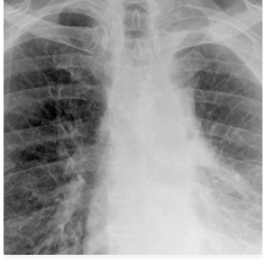

Mesothelioma is a severe cancer primarily caused by asbestos exposure and remains incurable. Recognize its signs and symptoms and seek early medical attention.
Mesothelioma is a rare cancer that affects the thin layer of tissue covering most of our internal organs. Asbestos exposure is the primary cause of this aggressive form of cancer, making it a concern for industrial workers and residents living in areas with high asbestos content.
The exact location of this cancer determines the type of Mesothelioma an individual has. There are primarily four main types:
Pleural Mesothelioma is the most common type and affects the mesothelial tissue surrounding the lungs. Pleural Mesothelioma often results from inhaling asbestos fibers, which get trapped in the pleura, causing inflammation and eventually leading to the development of tumors.
Peritoneal Mesothelioma affects the mesothelial tissue in the abdomen. Peritoneal Mesothelioma can develop when ingested asbestos fibers move through the digestive system, become embedded in the peritoneum, and can cause irritation, inflammation, and, eventually, tumor growth.
A rare type of this cancer, Pericardial Mesothelioma, affects the mesothelial tissue surrounding the heart. The exact mechanism by which asbestos fibers reach the pericardium remains under study. However, like other forms, the outcome is the development of tumors that can affect heart function.
Testicular Mesothelioma is the rarest type, affecting the lining surrounding the testes. Given the infrequency of cases, the mechanism behind their occurrence has yet to be entirely understood.
The symptoms of Mesothelioma vary depending on its type:
Mesothelioma is intrinsically linked to asbestos exposure, a group of naturally occurring minerals. Asbestos fibers are microscopic, and when inhaled or ingested, they can get lodged in tissues, causing irritation, inflammation, and cell DNA changes. Over time, these changes can cause cells to grow uncontrollably, resulting in tumors.
The DNA alterations associated with Mesothelioma are still an active research subject. Scientists are particularly interested in determining which genetic mutations drive its growth and progression. Understanding this could pave the way for more targeted therapies in the future.
The majority of mesothelioma cases are directly related to asbestos exposure. Asbestos was once heralded for its heat-resistant properties and was used in numerous industrial applications. Workers in shipyards, mines, construction, and other industries had prolonged exposure, putting them at significant risk.
Inhaling or ingesting even a tiny amount of asbestos can lead to Mesothelioma, but the disease typically appears after significant and prolonged exposure. Sadly, the latency period is long; symptoms might not manifest for 20–50 years after exposure.
Secondary or indirect exposure occurs when someone comes into contact with asbestos without directly working with the material. For instance, family members of workers can be exposed to asbestos fibers brought home on work clothes. Living near asbestos mines or factories can also pose risks, with fibers potentially contaminating air and water sources.
Diagnosing Mesothelioma can be challenging due to its non-specific symptoms. It usually involves imaging tests, biopsies, and blood tests.
While Mesothelioma is aggressive and challenging, options include surgery, radiation, chemotherapy, and targeted therapy.
While asbestos is the primary cause, there have been rare instances of Mesothelioma without known asbestos exposure. However, these cases are infrequent.